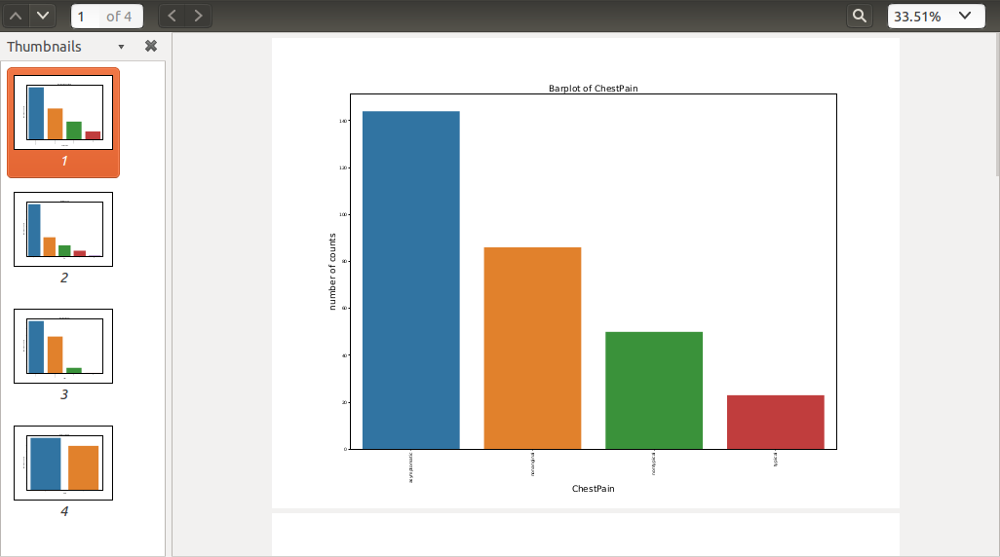
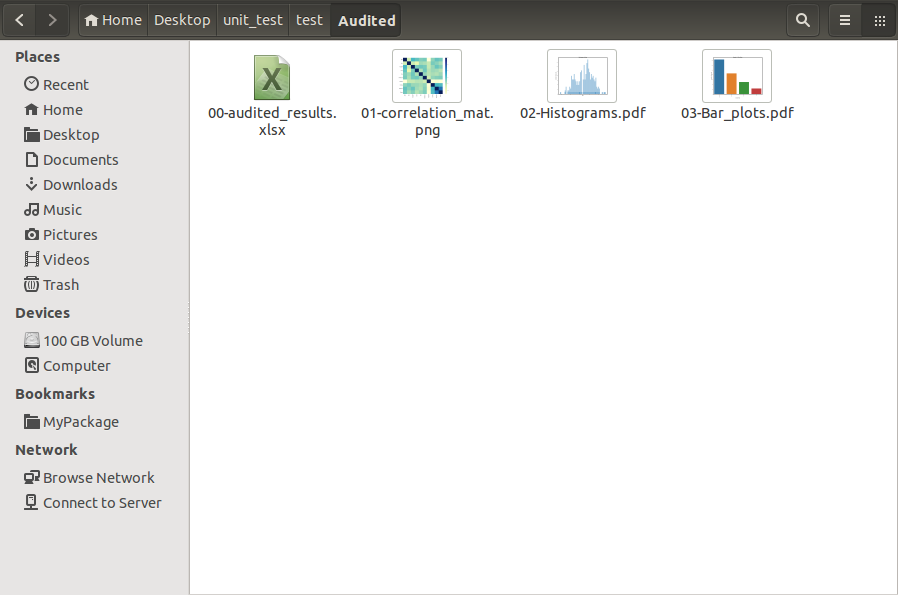
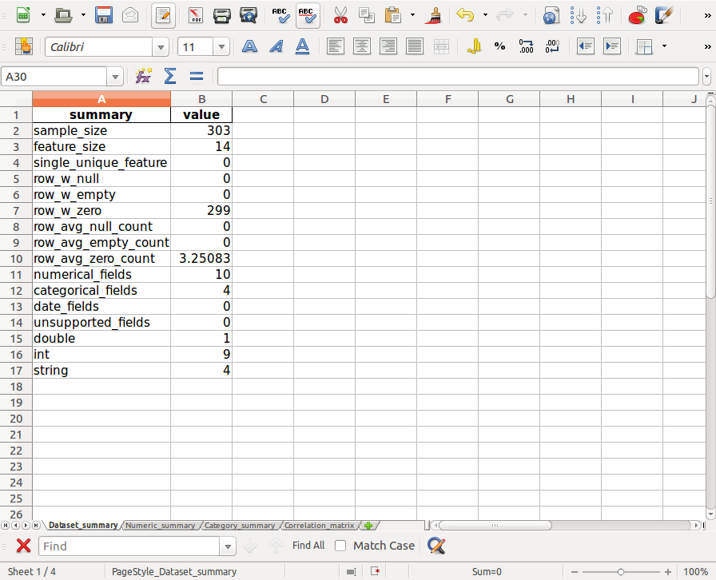
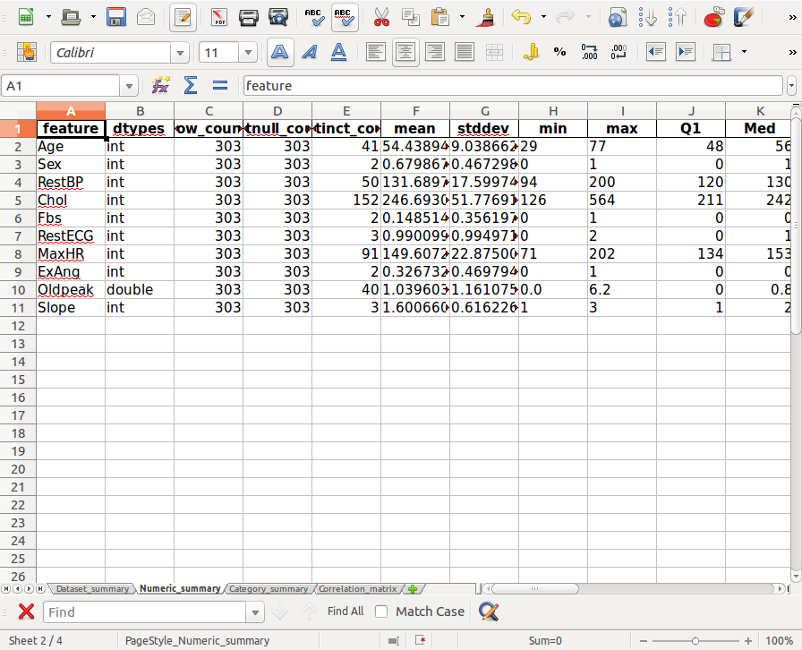
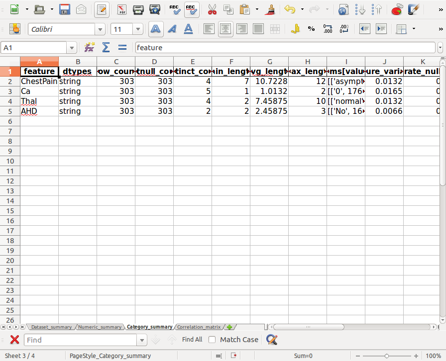
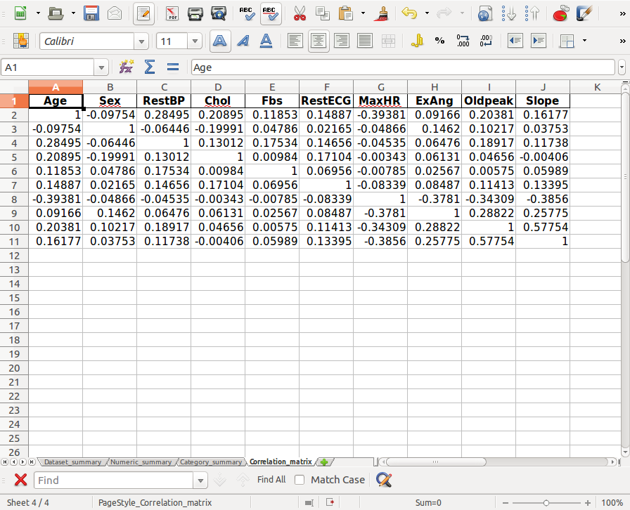
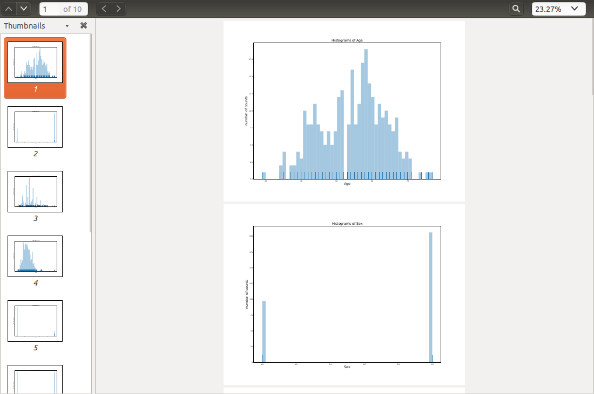
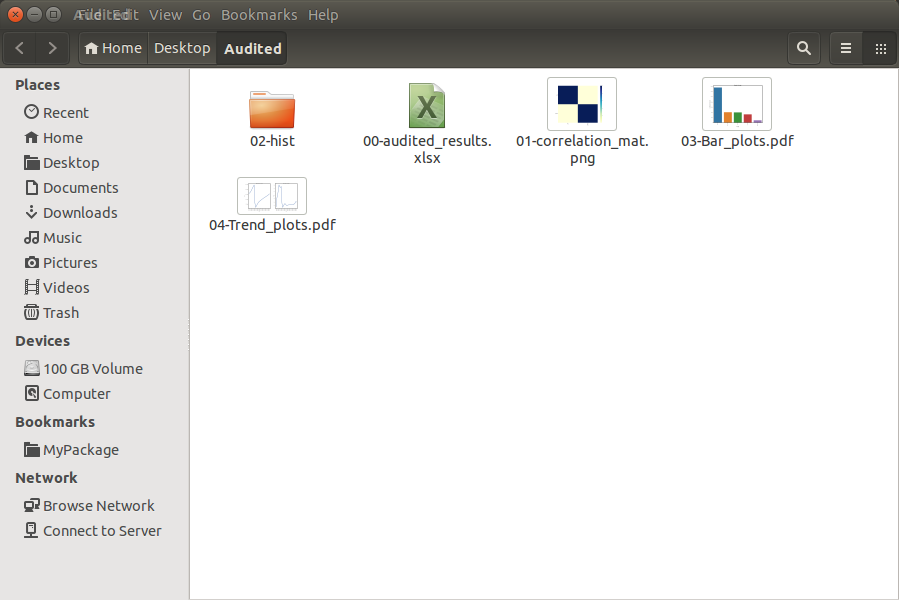

4. Auditing Demos¶
The following demos are designed to show how to use PySparkAudit to aduit rdd DataFrame.
4.1. Auditing function by function¶
If you just need a piece of the audit result, you can call the corresponding function to generate it. There are 9 basic auditing functions, 3 figure plot functions and 3 summary functions in the PySparkAudit library.
syntax
from PySparkAudit import *
Basic Functions:
- data_types:
PySparkAudit.data_types - dtypes_class:
PySparkAudit.dtypes_class - dtypes_class:
PySparkAudit.counts - dtypes_class:
PySparkAudit.describe - dtypes_class:
PySparkAudit.percentiles - dtypes_class:
PySparkAudit.feature_len - dtypes_class:
PySparkAudit.freq_items - dtypes_class:
PySparkAudit.rates - dtypes_class:
PySparkAudit.corr_matrix
- data_types:
Plot Functions:
- hist_plot:
PySparkAudit.hist_plot - bar_plot:
PySparkAudit.bar_plot - trend_plot:
PySparkAudit.trend_plot
- hist_plot:
Summary Functions
- dataset_summary:
PySparkAudit.dataset_summary - numeric_summary:
PySparkAudit.numeric_summary - category_summary:
PySparkAudit.category_summary
- dataset_summary:
For example:
from pyspark.sql import SparkSession
spark = SparkSession \
.builder \
.appName("Python Spark regression example") \
.config("spark.some.config.option", "some-value") \
.getOrCreate()
# import PySpark Audit functions
from PySparkAudit import data_types, hist_plot, bar_plot, freq_items,feature_len
from PySparkAudit import dataset_summary, rates
from PySparkAudit import trend_plot, auditing
# load dataset
data = spark.read.csv(path='Heart.csv',
sep=',', encoding='UTF-8', comment=None, header=True, inferSchema=True)
# audit function by function
# data types
print(data_types(data))
# check frequent items
print(freq_items(data))
# bar plot for categorical features
bar_plot(data, display=True)
Result:
feature dtypes
0 Age int
1 Sex int
2 ChestPain string
3 RestBP int
4 Chol int
5 Fbs int
6 RestECG int
7 MaxHR int
8 ExAng int
9 Oldpeak double
10 Slope int
11 Ca string
12 Thal string
13 AHD string
feature freq_items[value, freq]
0 Age [[58, 19], [57, 17], [54, 16], [59, 14], [52, ...
1 Sex [[1, 206], [0, 97]]
2 ChestPain [[asymptomatic, 144], [nonanginal, 86], [nonty...
3 RestBP [[120, 37], [130, 36], [140, 32], [110, 19], [...
4 Chol [[197, 6], [234, 6], [204, 6], [254, 5], [212,...
5 Fbs [[0, 258], [1, 45]]
6 RestECG [[0, 151], [2, 148], [1, 4]]
7 MaxHR [[162, 11], [163, 9], [160, 9], [152, 8], [132...
8 ExAng [[0, 204], [1, 99]]
9 Oldpeak [[0.0, 99], [1.2, 17], [0.6, 14], [1.0, 14], [...
10 Slope [[1, 142], [2, 140], [3, 21]]
11 Ca [[0, 176], [1, 65], [2, 38], [3, 20], [NA, 4]]
12 Thal [[normal, 166], [reversable, 117], [fixed, 18]...
13 AHD [[No, 164], [Yes, 139]]
================================================================
The Bar plot Bar_plots.pdf was located at:
/home/feng/Dropbox/MyTutorial/PySparkAudit/test/Audited
Process finished with exit code 0
and

4.2. Auditing in one function¶
For example:
from pyspark.sql import SparkSession
spark = SparkSession \
.builder \
.appName("Python Spark regression example") \
.config("spark.some.config.option", "some-value") \
.getOrCreate()
# from PySparkAudit import dtypes_class, hist_plot, bar_plot, freq_items,feature_len
# from PySparkAudit import dataset_summary, rates, trend_plot
# path = '/home/feng/Desktop'
# import PySpark Audit function
from PySparkAudit import auditing
# load dataset
data = spark.read.csv(path='Heart.csv',
sep=',', encoding='UTF-8', comment=None, header=True, inferSchema=True)
# auditing in one function
print(auditing(data, display=True))
Result:
4.2.1. print in bash¶
================================================================
The audited results summary audited_results.xlsx was located at:
/home/feng/Dropbox/MyTutorial/PySparkAudit/test/Audited
================================================================
The correlation matrix plot Corr.png was located at:
/home/feng/Dropbox/MyTutorial/PySparkAudit/test/Audited
================================================================
The Histograms plot Histograms.pdf was located at:
/home/feng/Dropbox/MyTutorial/PySparkAudit/test/Audited
Histograms plots are done!
================================================================
The Bar plot Bar_plots.pdf was located at:
/home/feng/Dropbox/MyTutorial/PySparkAudit/test/Audited
Caution: no date features in the dataset!!!
Generate all audited results took = 29.093122243881226 s
================================================================
The auditing processes are DONE!!!
( feature dtypes row_count ... rate_neg rate_zero rate_pos
0 Age int 303 ... 0.0 0.000000 1.000000
1 Sex int 303 ... 0.0 0.320132 0.679868
2 RestBP int 303 ... 0.0 0.000000 1.000000
3 Chol int 303 ... 0.0 0.000000 1.000000
4 Fbs int 303 ... 0.0 0.851485 0.148515
5 RestECG int 303 ... 0.0 0.498350 0.501650
6 MaxHR int 303 ... 0.0 0.000000 1.000000
7 ExAng int 303 ... 0.0 0.673267 0.326733
8 Oldpeak double 303 ... 0.0 0.326733 0.673267
9 Slope int 303 ... 0.0 0.000000 1.000000
[10 rows x 22 columns], feature dtypes ... rate_null rate_empty
0 ChestPain string ... 0.0 0.0
1 Ca string ... 0.0 0.0
2 Thal string ... 0.0 0.0
3 AHD string ... 0.0 0.0
[4 rows x 12 columns], Age Sex RestBP ... ExAng Oldpeak Slope
Age 1.000000 -0.097542 0.284946 ... 0.091661 0.203805 0.161770
Sex -0.097542 1.000000 -0.064456 ... 0.146201 0.102173 0.037533
RestBP 0.284946 -0.064456 1.000000 ... 0.064762 0.189171 0.117382
Chol 0.208950 -0.199915 0.130120 ... 0.061310 0.046564 -0.004062
Fbs 0.118530 0.047862 0.175340 ... 0.025665 0.005747 0.059894
RestECG 0.148868 0.021647 0.146560 ... 0.084867 0.114133 0.133946
MaxHR -0.393806 -0.048663 -0.045351 ... -0.378103 -0.343085 -0.385601
ExAng 0.091661 0.146201 0.064762 ... 1.000000 0.288223 0.257748
Oldpeak 0.203805 0.102173 0.189171 ... 0.288223 1.000000 0.577537
Slope 0.161770 0.037533 0.117382 ... 0.257748 0.577537 1.000000
[10 rows x 10 columns])
Process finished with exit code 0
4.2.2. Audited results folder¶

The files in 00-audited_results.xlsx:
- Dataset_summary

- Numeric_summary

- Category_summary

- Correlation_matrix

- Histograms in
Histograms.pdf

- Barplots in
Bar_plots.pdf
4.3. Auditing on Big Dataset¶
In this section, we will demonstrate the auditing performance and audited results on the big data set.
The data set is Spanish High Speed Rail tickets pricing. It is available at :
https://www.kaggle.com/thegurus/spanish-high-speed-rail-system-ticket-pricing. This data set has 2579771
samples and 10 features.
From the following CPU time, you will see most
of the time was spent on plotting the histograms. If your time and memory are limited, we will suggest
you to use sample_size to generate the subset of the the dataset to plot histograms.
For example:
from pyspark.sql import SparkSession
spark = SparkSession \
.builder \
.appName("Python Spark regression example") \
.config("spark.some.config.option", "some-value") \
.getOrCreate()
# from PySparkAudit import dtypes_class, hist_plot, bar_plot, freq_items,feature_len
# from PySparkAudit import dataset_summary, rates, trend_plot
# Audited results output path
out_path = '/home/feng/Desktop'
# import PySpark Audit function
from PySparkAudit import auditing
# load dataset
# Spanish High Speed Rail tickets pricing - Renfe (~2.58M)
# https://www.kaggle.com/thegurus/spanish-high-speed-rail-system-ticket-pricing
data = spark.read.csv(path='/home/feng/Downloads/renfe.csv',
sep=',', encoding='UTF-8', comment=None, header=True, inferSchema=True)
# auditing in one function
auditing(data, output_dir=out_path, tracking=True)
Result:
4.3.1. print in bash¶
================================================================
The audited results summary audited_results.xlsx was located at:
/home/feng/Desktop/Audited
Generate data set summary took = 60.535009145736694 s
================================================================
Collecting data types.... Please be patient!
Generate counts took = 0.0016515254974365234 s
================================================================
Collecting features' counts.... Please be patient!
Generate counts took = 6.502962350845337 s
================================================================
Collecting data frame description.... Please be patient!
Generate data frame description took = 1.5562639236450195 s
================================================================
Calculating percentiles.... Please be patient!
Generate percentiles took = 19.76785445213318 s
================================================================
Calculating features' length.... Please be patient!
Generate features' length took = 4.953453540802002 s
================================================================
Calculating top 5 frequent items.... Please be patient!
Generate rates took: 4.761325359344482 s
================================================================
Calculating rates.... Please be patient!
Generate rates took: 17.201056718826294 s
Auditing numerical data took = 54.77840781211853 s
================================================================
Collecting data types.... Please be patient!
Generate counts took = 0.001623392105102539 s
================================================================
Collecting features' counts.... Please be patient!
Generate counts took = 12.59226107597351 s
================================================================
Calculating features' length.... Please be patient!
Generate features' length took = 5.332952976226807 s
================================================================
Calculating top 5 frequent items.... Please be patient!
Generate rates took: 6.832213878631592 s
================================================================
Calculating rates.... Please be patient!
Generate rates took: 23.704302072525024 s
Auditing categorical data took = 48.484763622283936 s
================================================================
The correlation matrix plot Corr.png was located at:
/home/feng/Desktop/Audited
Calculating correlation matrix... Please be patient!
Generate correlation matrix took = 19.61273431777954 s
================================================================
The Histograms plots *.png were located at:
/home/feng/Desktop/Audited/02-hist
Plotting histograms of _c0.... Please be patient!
Plotting histograms of price.... Please be patient!
Histograms plots are DONE!!!
Generate histograms plots took = 160.3421311378479 s
================================================================
The Bar plot Bar_plots.pdf was located at:
/home/feng/Desktop/Audited
Plotting barplot of origin.... Please be patient!
Plotting barplot of destination.... Please be patient!
Plotting barplot of train_type.... Please be patient!
Plotting barplot of train_class.... Please be patient!
Plotting barplot of fare.... Please be patient!
Plotting barplot of insert_date.... Please be patient!
Plotting barplot of start_date.... Please be patient!
Plotting barplot of end_date.... Please be patient!
Bar plots are DONE!!!
Generate bar plots took = 24.17994236946106 s
================================================================
The Trend plot Trend_plots.pdf was located at:
/home/feng/Desktop/Audited
Plotting trend plot of _c0.... Please be patient!
Plotting trend plot of price.... Please be patient!
Trend plots are DONE!!!
Generate trend plots took = 11.697550296783447 s
Generate all the figures took = 196.25823402404785 s
Generate all audited results took = 379.73954820632935 s
================================================================
The auditing processes are DONE!!!
4.3.2. Audited results folder¶

.,,.
,;;*;;;;,
.-'``;-');;.
/' .-. /*;;
.' \d \;; .;;;,
/ o ` \; ,__. ,;*;;;*;,
\__, _.__,' \_.-') __)--.;;;;;*;;;;,
`""`;;;\ /-')_) __) `\' ';;;;;;
;*;;; -') `)_) |\ | ;;;;*;
;;;;| `---` O | | ;;*;;;
*;*;\| O / ;;;;;*
;;;;;/| .-------\ / ;*;;;;;
;;;*;/ \ | '. (`. ;;;*;;;
;;;;;'. ; | ) \ | ;;;;;;
,;*;;;;\/ |. / /` | ';;;*;
;;;;;;/ |/ / /__/ ';;;
'*wf*/ | / | ;*;
`""""` `""""` ;'